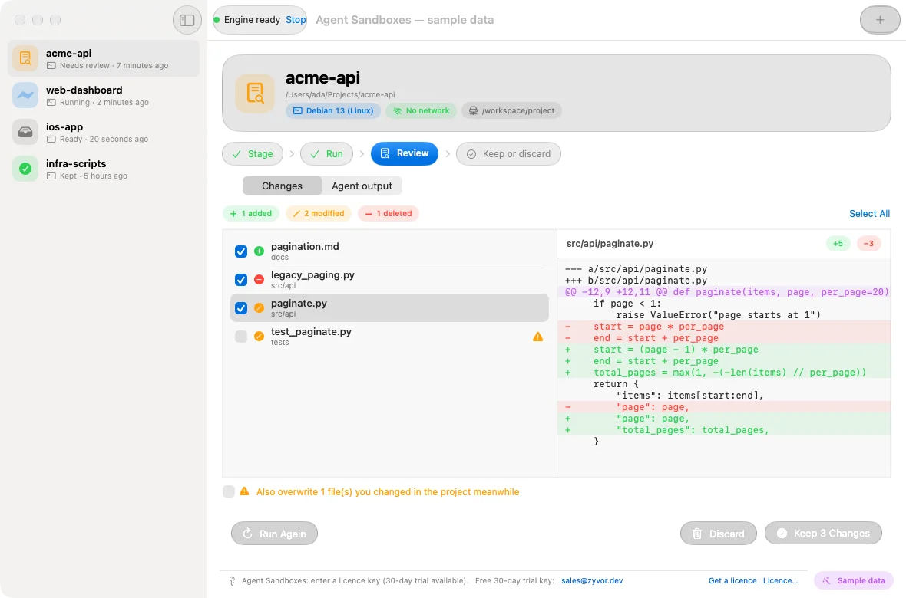

Zyvor · menu bar
Agent Sandboxes
Run an agent in a disposable VM.
Let a coding agent loose without handing it your Mac. Each run happens in a throwaway virtual machine on your project's clone. When it finishes you read the diff and choose what to keep. Built on FluxVM and Apple's Virtualization framework, bundled in the app.
Agent-Sandboxes-0.6.1.dmg · macOS · See current prices · All downloads
Verified by Apple: Developer ID signed and notarized. This applies to the macOS DMG.
- Needs macOS 27 or later on Apple silicon. The app works without a key; a trial key is optional.

Let an agent work. Keep only what you approve.
Your project stays safe
The VM mounts an instant APFS clone. Your project changes only when you press Keep, and only the files you ticked are written.
See exactly what changed
Added, modified and deleted files each show a diff. You choose what to keep and what to discard.
Nothing is left behind
Each run happens in a throwaway virtual machine. When the run ends, the VM is deleted.
Stage. Run. Review. Keep or discard.
Four steps, and your real project changes only at the last one.
Features
Review
See exactly what the agent changed.
Every run ends with a change set: files added, modified and deleted, with a unified diff for each. Tick what you want to keep. Your real project changes only when you press Keep.
Run
A VM that lives for one job.
Pick a template, drop in a project folder and a command. The project is cloned instantly with APFS copy-on-write, mounted into a Linux VM, and the agent runs there. When the command ends the VM is deleted. Your project is not touched meanwhile.

Set up
Template, folder, command. Go.
Choose Debian 13, the small Agent micro image, or a macOS guest. Decide whether the sandbox gets network access. Sensible folders only: system roots and your home folder are refused as projects.

Small things that add up.
Instant staging
The project is cloned with APFS copy-on-write, so even a large repo stages in moments.
Conflict aware
A file you edited in the project while the agent ran is flagged and skipped unless you choose to overwrite it.
Own engine, own port
The app runs its own FluxVM engine on 127.0.0.1:7799 with its own state folder. A FluxVM you already run is not touched.
Keyboard first
Command-N new sandbox, Command-R run again, Command-Return keep, Command-Delete discard. Reduce Motion and Reduce Transparency are respected.
Control it, script it, limit it.
Included in 0.6.1.
Project policy
A .sandbox-policy.json in your real project sets deny and allow globs, size caps and run hooks, and Keep refuses added lines that look like credentials. Read more
Command line and MCP
Run, review, keep, rerun, export and clean up from sbx, or let an agent do it over MCP. Keep stays off for MCP unless you allow it. Read more
Hunks, history, cleanup
Keep single hunks, see every run's output, snapshot and restore, and bulk-remove old sessions after a preview.
Careful by default.
Your project is read-only to the VM
The VM mounts a clone, not your project. Keep writes only the files you ticked, through a temporary file and rename.
Path safety
Destinations must be relative, with no .. and no symlink between the project root and the target. .git, node_modules and build folders are never applied.
One entitlement
Only com.apple.security.virtualization, on the VM runner. No vmnet, no USB.
Specs and requirements.
- Requires
- macOS 27 or laterApple silicon only.
- Build
- Signed and notarizedDeveloper ID signed and notarized by Apple.
- Version
- 0.1.0Free 30-day trial key: sales@zyvor.dev
- Guests
- Linux and macOSDebian 13 and Agent micro; macOS from an IPSW install you make once.
- macOS limit
- Two at a timeApple allows at most two macOS guests on a Mac. A third is refused with the reason.
- Engine
- FluxVM 0.4.21Bundled, Zyvor Production License v1.0, Developer ID signed.
Honest limits
Version 0.1.0 is a first release. A Linux sandbox was booted through the whole flow on a real VM. macOS guest project mounting, IPSW install and boot are not verified in this build. There is no vmnet (bridged or shared) networking and no USB passthrough. A sandbox that mounts a project cold-boots in about 8 seconds once the base image is cached; the first create downloads the image. The UI was not clicked through on a live desktop before release. Every screenshot on this page is a render of the app's own views with sample data, not a capture of a live session.
Get started in three steps.
Download
Get
Agent-Sandboxes-0.6.1.dmgfrom the release page. The SHA-256 is below and inAgent-Sandboxes-0.6.1.dmg.sha256.Install
Open the DMG and drag AgentSandboxes to Applications. It needs macOS 27 or later on Apple silicon and lives in the menu bar.
Optionally add a key
The app works without a key. For a free 30-day trial key write to sales@zyvor.dev and paste it under Licence….
Agent Sandboxes 0.6.1 for Mac · SHA-256
8609f6bb8b92ce168011aa7495f4b3de7815c36c7aafcb535d371ab36c105c03Verify: echo "8609f6bb8b92ce168011aa7495f4b3de7815c36c7aafcb535d371ab36c105c03 Agent-Sandboxes-0.6.1.dmg" | shasum -a 256 -c
Prices and licenses
Current prices, in your currency where available, are on zyvor.dev. Agent Sandboxes works without a key and never turns a feature off. You can ask for a 30-day trial key before you decide.
Buy a licenseAsk for a 30-day trialSee current prices
How the trial and the status line work · Zyvor Production License v1.0
Questions, answered.
Does it work without a licence key?
Yes. Everything works and the app shows a status line saying it is unlicensed. For a free 30-day trial key write to sales@zyvor.dev.
What does it cost?
Current prices are on zyvor.dev/pricing. For a quote, write to sales@zyvor.dev.
Does the agent touch my real project?
No. The VM mounts an instant APFS clone. Your project changes only when you press Keep, and only the files you ticked are written.
Which agents work?
Any command-line agent or script you can run in the guest. You give the app the command; it runs it in the VM and shows what changed.
Does it work on Intel Macs?
No. Apple silicon only.
Can I run macOS guests?
The template and the two-guest limit are built, but macOS guest project mounting, IPSW install and boot are not verified in 0.1.0. Linux guests are the verified path.
Does it conflict with FluxVM?
No. Agent Sandboxes bundles FluxVM 0.4.21 and runs its own daemon on port 7799 with its own state folder.
Are the screenshots real?
They are renders of the app's own views with invented sample data, produced by the app. They are not captures of a live session.
Will macOS warn me when I open it?
No. It is Developer ID signed and notarized by Apple. The SHA-256 is on the release page if you want to verify it.